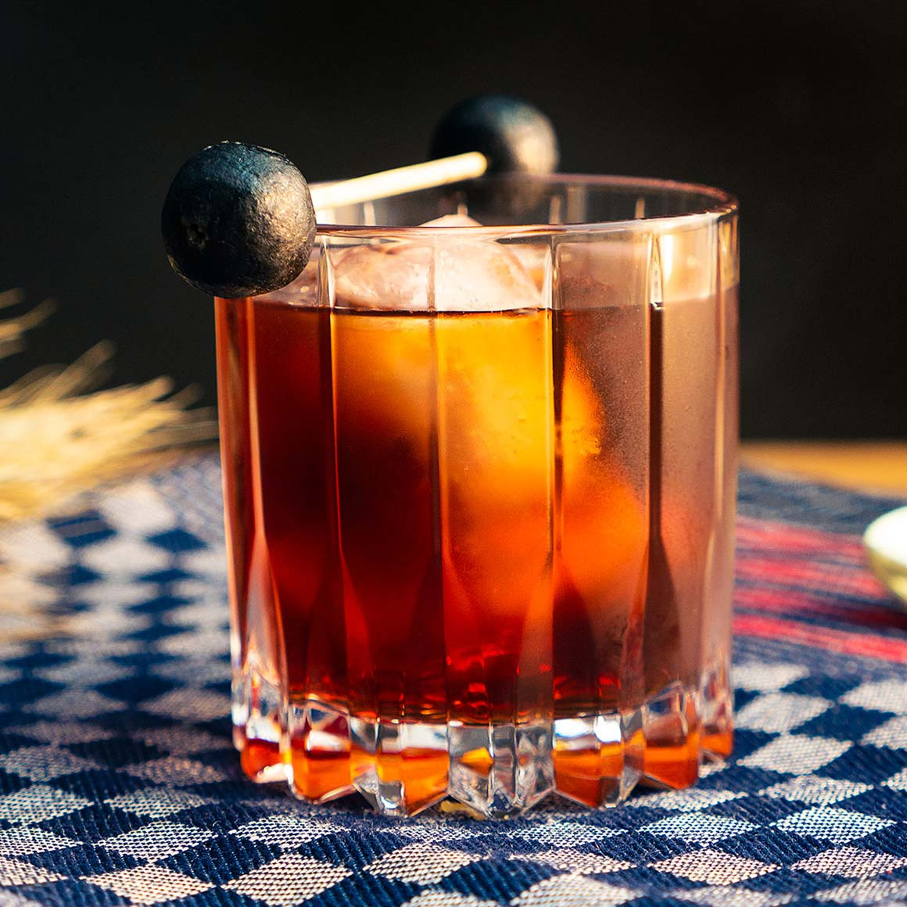

Manhatten

Der Manhattan ist einer der berühmtesten Cocktails der Welt und wurde
erstmals um das Jahr 1880 serviert. Der kalt gerührte Mix aus würzigem
amerikanischen Whiskey, roten Vermouth und Bitters ist so ehrlich und
ursprünglich wie ein Drink nur sein kann. Wir erklären, wie der
Klassiker im Handumdrehen gelingt und geben Tipps für die Wahl der
passenden Zutaten.
Zutaten
- 60 ml Rye Whiskey
- 30 ml roter Vermouth
- 2 Spritzer Angostura Bitters
- 1 Cocktailkirsche
Zubereitung
-
Rye Whiskey, roten Vermouth und Angostura Bitters in ein Rührglas
geben.
- Eiswürfel hinzufügen und den Drink 30 Sekunden lang rühren.
-
Ein Cocktailglas mit Eiswürfeln füllen und den Manhattan abseihen.
- Mit einer Cocktailkirsche garnieren und servieren.